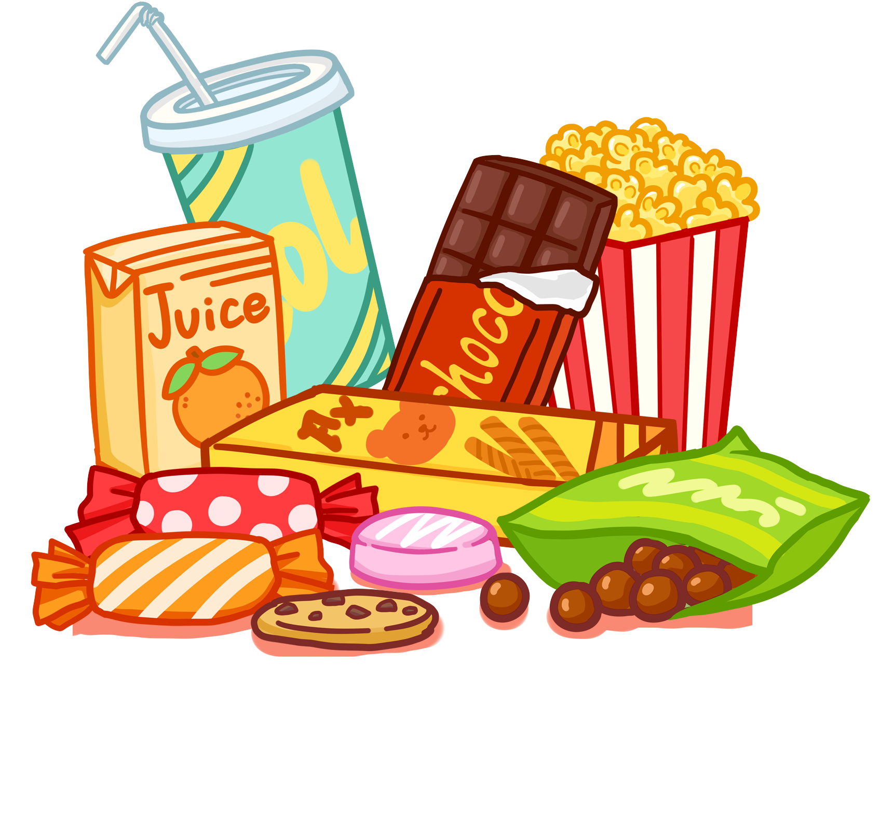

Wellcome,
Snack Lovers
Dear snack lovers, this is the official website Terfuji Snacks, a reseller brand of contemporary snacks, insha Allah is trustworthy. We are waiting for your order, thank you
Order Now
